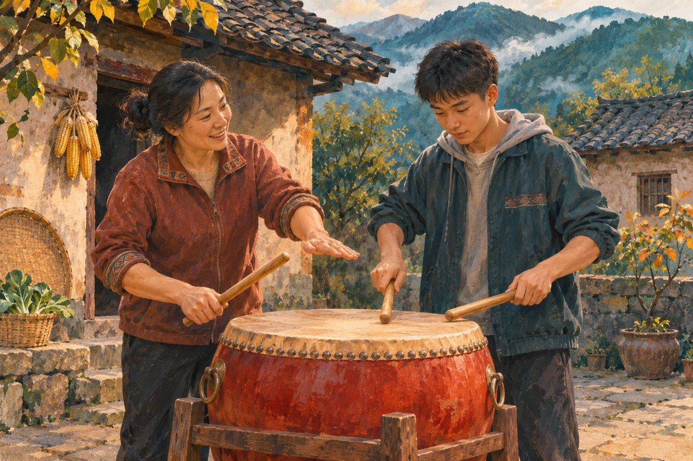
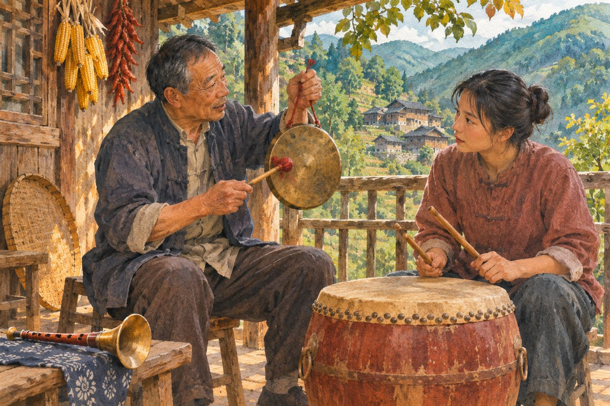

鼓文化
一声鼓响，几代人的日常。
从乡里的鼓王，到跟着妈妈学鼓的少年；从师徒传艺，到年轻人的田野走访。五个故事，走近鼓声背后的人。
鼓声背后的五个故事

三岔沟村 · 2018 年黄玉玲：从村民到“鼓王”十二支队伍同台，乡亲们把平日里的鼓声带上了赛场。报道实拍 · 非本人肖像读故事

茅田民族初中 · 2018 年十四岁那年，他跟着妈妈学打鼓薛天苏的兴趣，从看妈妈在家练鼓开始。AI 插画 · 非本人肖像读故事

阳坡村 · 师徒传艺李浩接过二叔手中的锣鼓从十二岁学艺，到十八岁站上主堂鼓的位置。AI 插画 · 非本人肖像读故事

茅田乡 · 2023 年暑期年轻人把课堂搬到鼓韵亭听演奏，也问艺人：这门技艺怎样走到今天？报道实拍读故事
太和街与大茅田 · 2023 年报道夏天的鼓声，迎来远方客人纳凉音乐节、苗鼓表演，让避暑的日子有了乡土的声音。AI 主题插画读故事
认识茅田的鼓
当地报道中的苗鼓、丝弦锣鼓，各有表演方式。丝弦锣鼓融合打击乐与吹奏、弦乐，不能简单理解为一种独奏鼓；其省级非遗身份见于相关报道。
本期以文化阅读和图文展示为主。历史活动按报道年份呈现，现场暂无固定鼓乐表演节目。